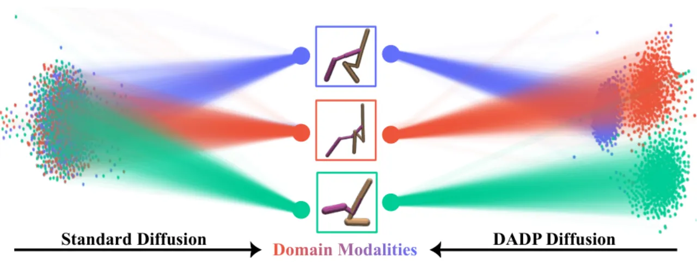
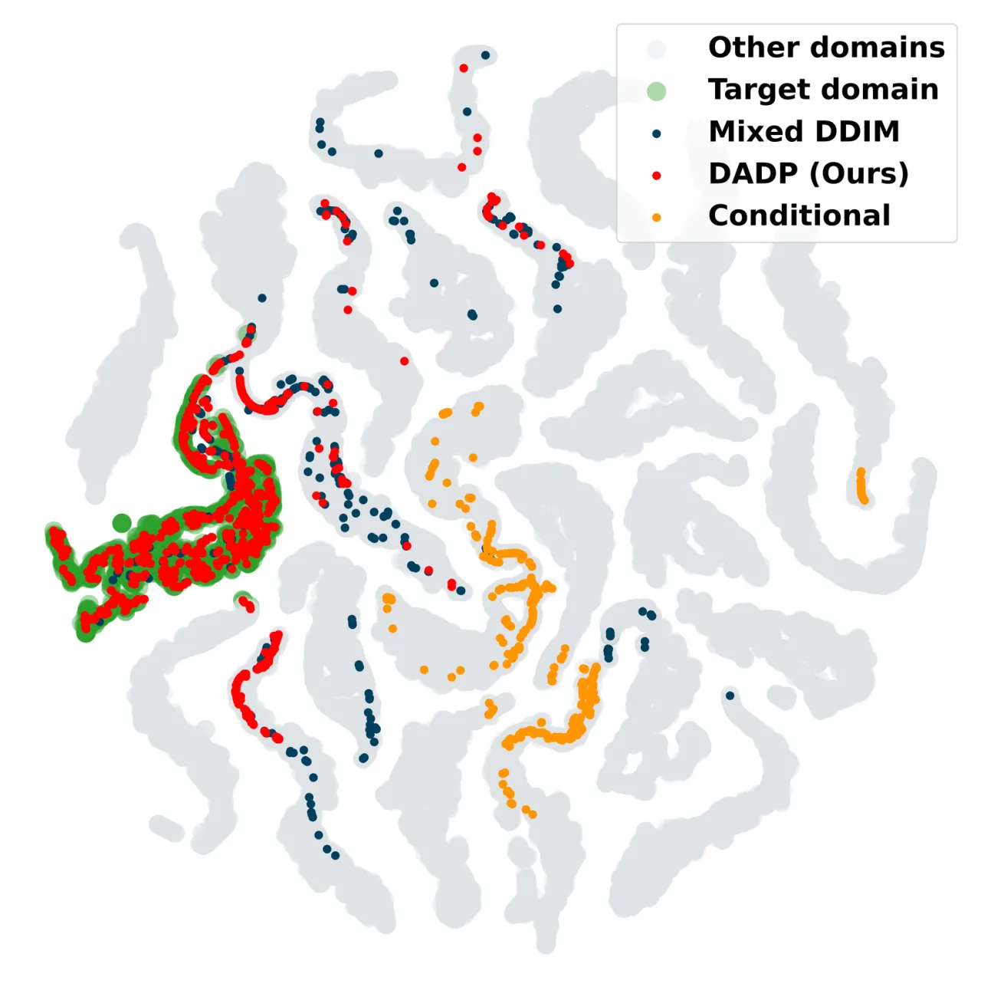
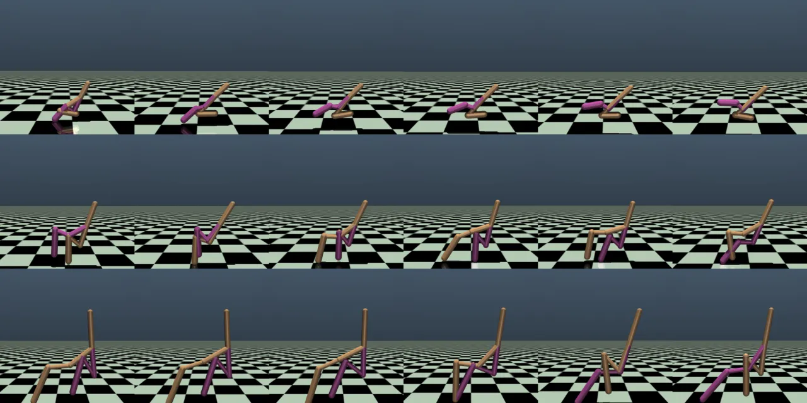

面对训练时未见过的 transition dynamics，如何让一个策略稳健泛化？DADP 指出：用 dynamical prediction 学域表征时，若取相邻上下文，会把 static domain 信息与瞬时 varying 动态纠缠在一起，干扰策略。DADP 通过无监督解耦提纯静态域表征，并将其直接注入扩散生成过程，在 locomotion 与 manipulation 上取得 SOTA 与更强泛化。
域（domain）指的是环境的 transition dynamics，通常由一个低维参数向量刻画（如 gravity、friction、joint torque、limb length），因此本质上是静态的。域自适应的核心是从交互轨迹里推断出一个稳定的域描述子（domain descriptor），再据此做域感知决策。
然而主流方法用 dynamical prediction 作为辅助任务来隐式学表征时，习惯性地取最近的历史作为 context。作者分析发现：由于 context 与当前步在时间上对齐，从中推断出的瞬时 varying 信息（如速度等高阶时间导数）会成为预测任务的"天然全局最优"，被一并编码进表征——于是表征里同时混入了 static domain 信息与 varying 动态。
"selecting contexts adjacent to the current step causes the learned representations to entangle static domain information with varying dynamical properties. Such mixture can confuse the conditioned policy, thereby constraining zero-shot adaptation."
这种"污染"会导致同一域内表征漂移（representation drift），降低跨域可分性，损害泛化。DADP 的目标就是把 varying 信息从表征里剥离出去，只保留稳定的静态域因子。

DADP = 无监督解耦（学到纯净的静态域表征）+ 域感知扩散注入（把表征用到生成过程里）。训练分两阶段：先在训练集上预训练 context encoder 提取域表征，再固定该 encoder、训练 diffusion policy。
关键洞察：既然"相邻 context"里的 varying 信息之所以会被编码，是因为它与当前步时间对齐、能帮助预测；那就打破这种时间相关性。作者引入一个较大的历史偏移 Δt，把预测的 context 从"最近历史"挪到"更远的历史"。随着 Δt 增大，offset context 关于瞬时 variation 的信息量下降（信息论视角），varying 信息无法再延展到当前步来降低预测损失，于是被排除出表征；而 static domain 因子是域内时不变的，仍然保留。
当 Δt → 极大（例如取自同一域的另一个 episode）时，表征退化为纯静态：静态域信息 + 一个使数据分布上预测损失最小的"平均 varying 属性"。附录 A 用竖直抛体运动的 toy case 说明：从另一 episode 取 context 后，速度无法延展到当前步，encoder 被迫去学静态的重力加速度 g。
"by increasing this temporal gap, we unsupervisedly disentangle static domain representations by filtering out transient properties."
作者指出：若只是把域表征当作策略的额外输入（conditioning），扩散策略就得从先验高斯里的每个采样点平等地重建各域的 action modality，导致 latent 噪声空间中去噪轨迹相互纠缠、无法利用噪声结构。DADP 换一种用法：
消融显示（见实验）这种"w/ Predict"用法带来最大的策略性能增益。附录 E 给出完整算法伪代码（Algorithm 1）。
设置：把域自适应形式化为 offline meta-RL。locomotion 用 4 个 MuJoCo 环境（Ant / HalfCheetah / Walker2d / Hopper），沿用 CORRO 的数据流程、用 SAC 训练各域专家采集，含 25 个域，并额外引入形态学（morphological）变化使各域步态更多样；manipulation 用 Adroit（Door / Relocate，含 3 个域，数据取自 ODRL）。基线：CORRO（对比学习）、Prompt-DT / Meta-DT（Decision Transformer 系，Meta-DT 为 SOTA）、End-to-End Diffusion。全部在 zero-shot 下评测，跨 5 个随机种子取 mean ± std。
IID = 在训练域上评测（多域掌握能力）；OOD = 在从参数空间新采样的 5 个未见域上评测（泛化能力）。数值为 5 seeds 的 mean（越高越好，Relocate 除外为负奖励）。
| 环境 / 设定 | CORRO | Prompt-DT | Meta-DT | DADP (Ours) |
|---|---|---|---|---|
| Walker2d · IID | 614 | 590 | 1304 | 3991 |
| Walker2d · OOD | 666 | 435 | 889 | 3015 |
| HalfCheetah · IID | -3014 | 1640 | 3857 | 4100 |
| HalfCheetah · OOD | -2463 | 250 | 3174 | 3056 |
| Ant · IID | -867 | 700 | 3045 | 3117 |
| Ant · OOD | -962 | 208 | 3187 | 3495 |
| Hopper · IID | 801 | 935 | 1140 | 1643 |
| Door (Adroit) · IID | -501 | 2116 | 1283 | 1483 |
| Relocate (Adroit) · OOD | -12.0 | -6.47 | -5.77 | -5.63 |
DADP 在几乎所有环境的 IID 与 OOD 下都优于或持平最强基线，且各 seed 间 std 更小（如 Walker2d IID std 仅 ±24），稳定性更好。在 Walker2d 上领先幅度最大（表征质量从大 Δt 中获益最多）。

用 linear probe accuracy（线性分类器预测 one-hot 域编号）与 reconstruction loss（MLP 回归真实动力学参数）评估表征质量，并以监督表征（用 ground-truth 标签训练）作为性能上界。随 Δt 增大两个指标一致改善：Walker2d 的 linear probe accuracy 从 27.9% → 99.3%（逼近监督的 99.8%），reconstruction loss 从 476.1 → 3.2。t-SNE 显示不同域的表征逐渐清晰聚类。
对比四种用法：Null.（去掉表征，端到端）/ Cond.（当条件输入）/ w/o Predict（仅偏置先验为 mixed Gaussian）/ w/ Predict（DADP：再把表征作为预测目标的一部分）。新增 mastery 指标 = 达到专家 60% 性能的 IID 域比例。
| 变体 | Walker2d IID | Walker2d Mastery | HalfCheetah IID | HalfCheetah Mastery |
|---|---|---|---|---|
| End-to-End (Null.) | 3722 | 40 | 3509 | 80 |
| Conditional (Cond.) | 2093 | 0 | 3740 | 80 |
| Mixed DDIM (w/o Predict) | 3356 | 36 | 3533 | 84 |
| DADP (w/ Predict) | 3991 | 44 | 4100 | 96 |
| Supervised（上界） | 4014 | 44 | 3846 | 88 |
DADP 在所有变体里 mastery 最高，能真正"掌握"多样的域。一个有趣现象：简单的 End-to-End Diffusion 反而胜过多个变体，说明扩散策略天然适合域自适应问题，但在该场景仍被低估、尚待探索。

论文明言：DADP 聚焦 stationary dynamics，因此刻意把 static 信息从 context 的 time-varying 信息中解耦出来。但在 non-stationary 环境里，time-varying 信号可能反映不断演化的动力学、策略必须追踪它才能有效控制。作者将"如何联合解耦并保留 time-varying 信息、把 DADP 扩展到非平稳动力学设定"列为 future work。
解耦机制的核心是增大历史偏移 Δt（极端情形取自同一域的另一 episode）。这要求训练时能获得同一域内足够多、足够长的轨迹（如 Walker2d 每域 300 episodes）；数据覆盖不足或域内轨迹稀缺时，解耦效果可能受限。
实验覆盖 locomotion（4 个 MuJoCo 环境）与 manipulation（Adroit Door/Relocate），均为仿真 benchmark；论文未报告真实硬件上的 sim-to-real 结果，实际部署下的表现有待进一步验证。